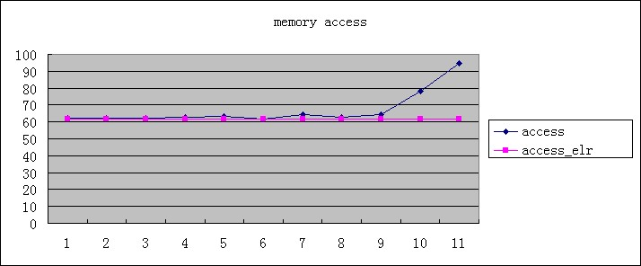
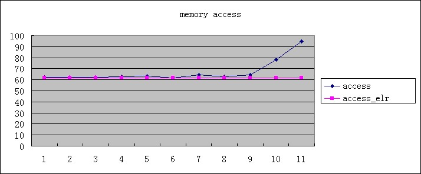
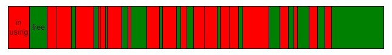
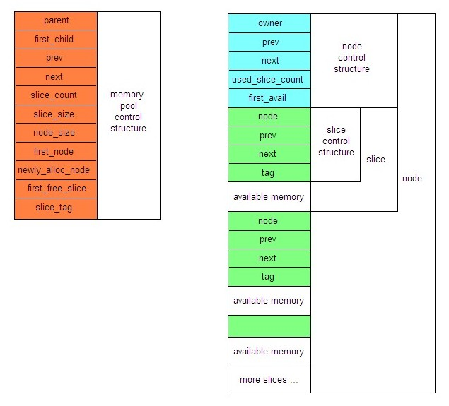
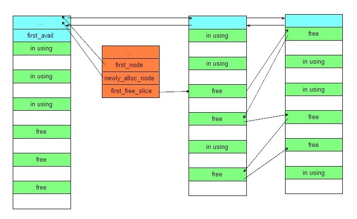
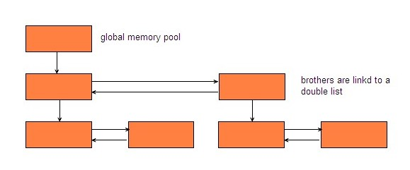
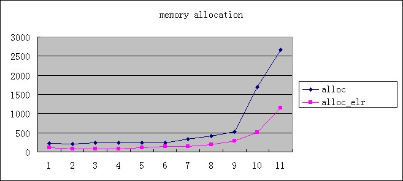
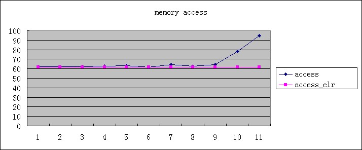

Usually, memory allocation of OS is fast, especially the computer has just started. But over time memory fragmentation becomes serious, memory allocation and access will become more and more slowly. Memory fragmentation caused by the continuously allocate and free memory of different size.
When memory fragmentation becomes serious, owing to addresses of memory need by execution sequences are very discrete, MMU (Memory Management Unit, hardware, a part of CPU) triggers missing pages interruption more frequently. This is the cause of slow memory access.
To find a free memory block that match the size of memory allocation most is becomes hard when memory fragmentation becomes serious. Because OS needs search more free memory blocks to find one of the best size. This is the cause of slow memory allocation.
The keys to solve the above problems are to avoid memory fragmentation as far as possible and to reduce the memory allocation and freeing. The solution is memory pool.
For memory pools, to speedup memory allocation is not as important as to speedup memory access. Because memory access is with a running program from beginning to end. Memory allocation is not as often. In the following part, I will introduce a memory pool that to reduce memory fragments by allocate a large blocks of memory and to speedup memory allocation by do not really free the allocated memory.
This is a high performance, flexible, cross-platform memory pool published under MIT Licence. It is free for personal or commercial use and had been used in many production environment.
In the past three years, I engaged in developping computer vision systems for traffic management. In this kind of programs, many large blocks of memory are needed to cache the images from ip camera and process them in real time. If we use malloc or new to allocate every time a large block of memory is needed, as the program running, we found memory allocation becomes more and more slowly and more likely to fail. The program also runs more slowly.
The reason is memory fragmentation that caused by the continuously allocate and free memory of different size. I found the key to solve the problem, it is memory pool. I investigated memory pool from Apache Portable Runtime. Found that it is a little complex and hard to make it support embedded platform. The most important is that APR is better at creating and destroying memory pool than at allocating and freeing memory in one pool.
Memory is managed with node and slice of this memory pool. Node is a big block of memory, slice is a small block of memory in the node. Each memory block allocated from this memory pool is belong to a slice.
All slices from a memory pool is of the same size, so this memory pool is more like a object pool. But we can implement a more flexible memory pool by use many memory pool instance of different slice size.
Nodes is linked as list, available slices also linked as list. When allocate memory form the memory pool. It first check whether a free slice is exist. If exist take one. If not, check whether the newly allocated node have never used slices. If have, take a slice form the node. If not, allocate a new node and take a slice from it. When free a memory block, just move it to the head of available slice list.
This memory pool is organized in tree structure. When create a memory pool, we can specify its parent memory pool by use a pointer to the parent pool as the first parameter for elr_mpl_create function. When a memory pool is destroyed, its child memory pool also be destroyed. So we do not need destroy the memory pool and its child memory pool when we do not need those memory pools, just destory the parent memory pool. If we do not specify the parent memory pool when create a memory pool, the memory pool`s parent memory pool is the global memory pool, which is created at the first time elr_mpl_init be invoked, and be destoryed at the last time elr_mpl_finalize be invoked. Memory usage of memory pools\' control structure are allocated from the global memory pool. We can see that in this realization of memory pool all memory pool instance is the child or sub-child of the global memory pool. This means all memory pools will be destroyed when the last time elr_mpl_finalize be called. This reduce the chance of memory leak to the minimum degree.
This memory pool also support muti-threading using. If we want it works in muti-theading environment, we must implement all the six interfaces defined in file elr_mtx.h and define ELR_USE_THREAD. Fortunately, it is a very easy job, and the implementation on windows platform is already provided.
When make the windows implementation, I take linux into consideration too. So the atomic counter(interger) type (atomic_t of linux, volatile LONG of windows) and counter value type (int of linux, LONG of windows) is defined separately. On windows there are not a atomic type, just a LONG illuminated by volatile (volatile LONG). We can make assignment between LONG and volatile LONG. But on linux atomic counter(interger) type is defined as follow.
typedef struct
{
volatile int counter;
}atomic_t;
Assignment between int and atomic_t is against the C language syntax.
The client proto-type of memory pool is defined as follow.
typedef struct __elr_mpl_t
{
void* pool; /*!< the actual handler of internal memory pool object. */
int tag; /*!< the identity code of memory pool object. */
}
elr_mpl_t,*elr_mpl_ht;
#define ELR_MPL_INITIALIZER {NULL,0}
The tag member is the identity code of memory pool instance, which is used for judging whether the elr_mpl_t variable is still valid. This will be explained later.
This memroy pool has only eight functions.
Following is explanation form source code file.
/*! \brief initialize memory pool module. * \retval zero if failed. * * this function can invoke many times in one process. * bear in mind that one should invoke elr_mpl_finalize * the same times as invoke this function in one process * when the process about to end. */ int elr_mpl_init(); /*! \brief create a memory pool. * \param fpool the parent pool of the about to created pool. * \param obj_size the size of memory block can alloc from the pool. * \retval NULL if failed. * * in fact this memory pool is more like object pool. */ elr_mpl_t elr_mpl_create(elr_mpl_ht fpool,size_t obj_size); /*! \brief verifies that a memory pool is valid or not. * \param pool pointer to a elr_mpl_t type variable. * \retval zero if invalid. */ int elr_mpl_avail(elr_mpl_ht pool); /*! \brief alloc a memory block from a memory pool. * \param pool pointer to a elr_mpl_t type variable. * \retval NULL if failed. * * size of the memory block alloced is the second parameter * of elr_mpl_create when create the pool. */ void* elr_mpl_alloc(elr_mpl_ht pool); /*! \brief get the size of a memory block from a memory pool. * \param mem pointer to a memory block from a memory pool. * \retval size of the memory block. */ size_t elr_mpl_size(void* mem); /*! \brief give back a memory block to it`s from memory pool. */ void elr_mpl_free(void* mem); /*! \brief destroy a memory pool and it`s child pools. */ void elr_mpl_destroy(elr_mpl_ht pool); /*! \brief finalize memory pool module. * * when finalize is finished all memory pools will be destroyed. * make sure that when finalize is in process all memory pool is not in using. * so it is recommend that elr_mpl_finalize invoked only in the end of a process. */ void elr_mpl_finalize();
A simple example of usage.
#include#include #include "elr_mpl.h" int main() { elr_mpl_t mypool = ELR_MPL_INITIALIZER; elr_mpl_t mysubpool = ELR_MPL_INITIALIZER; void* mem = NULL; int len = 0; elr_mpl_init(); mypool = elr_mpl_create(NULL,256); printf("%s\n","create a memory pool: mypool."); mysubpool = elr_mpl_create(&mypool,128); printf("%s\n","create a sub memory pool of mypool, name is mysubpool."); mem = elr_mpl_alloc(&mysubpool); printf("%s\n","alloc a memory block form mysubpool."); len = elr_mpl_size(mem); printf("the memory block size is %d.\n",len); elr_mpl_free(mem); printf("give back the memory block to mysubpool.\n",len); mem = elr_mpl_alloc(&mypool); printf("%s\n","alloc a memory block form mypool."); len = elr_mpl_size(mem); printf("the memory block size is %d.\n",len); elr_mpl_free(mem); printf("give back the memory block to mypool.\n",len); elr_mpl_destroy(&mypool); printf("destroy mypool.\n",len); printf("when mypool has destoryed, it`s sub pool, mysubpool, did %s destoryed.\n", elr_mpl_avail(&mysubpool) == 0?"also":"not"); elr_mpl_finalize(); getchar(); return 0; }
All memory pools` control sturcture is form the global memory pool. Assume that we have two elr_mpl_t variable point to one memory pool instance, elr_mpl_destroy is called for one of the two elr_mpl_t variable. Then another elr_mpl_create call just reuse the memory of the memory pool instance`s control sturcture. In this case we can still make a successful call of elr_mpl_alloc for the other elr_mpl_t variable, but we may allocate a memory block of different size. If the size is greater, there may no problem. If the size is smaller, a violate memory access error will occur.
So I use a integer value to identify every memory slice. Whenever a memory slice is taken form a memory pool or given back to the memory pool, I make an increment to the integer by one. So if the elr_mpl_t variable is point to a valid memory pool, the tag member is equal to the identify value of the memroy slice for the actual handler of internal memory pool object (void* pool;).
This project contains only four files. elr_mpl.h and elr_mpl.c are the core implementation files, elr_mtx.h and elr_mtx.c are for muti-threading support. If you do not need muti-threading support, just add elr_mpl.h and elr_mpl.c to your prject.
To evaluate this memory pool, I write a test program. In order to simulate the actual situation better, I let memory allocation, memory freeing and memroy access occurred randomly, and memorize total times and total time consumption. Afterward, the result of total time consumption divided by total times is the time consumption for one operation.
The following is my simulation.
/* alloc_size the memory block size for allocating, access, freeing.*/
/* alloc_times total times of memory allocation operation. Need to be initialized to zero. */
/* alloc_clocks total time consumption of memory allocation operations. Need to be initialized to zero. */
/* other parameters ditto.*/
void mpl_alloc_free_access(size_t alloc_size,
int *alloc_times,
unsigned long *alloc_clocks,
int *free_times,
unsigned long *free_clocks,
int *access_times,
unsigned long *access_clocks)
{
int i = 0, j = 0, ri = 0;
unsigned long alloc_clks;
unsigned long free_clks;
unsigned long access_clks;
char *mem_stack[1000];
char stub = 0;
elr_mpl_t pool = elr_mpl_create(NULL,alloc_size);
if(elr_mpl_avail(&pool) != 0)
{
srand((unsigned)time(NULL));
for (j = 0; j < 1000; j++)
{
ri = rand()%100;
if(ri < 50)
{
alloc_clks = my_clock();
mem_stack[i] = (char*)elr_mpl_alloc(&pool);
*alloc_clocks += (my_clock()-alloc_clks);
(*alloc_times)++;
if(mem_stack[i] != NULL)
{
stub = 0;
access_clks = my_clock();
*(mem_stack[i]+(alloc_size-1)) = 0;
*access_clocks += (my_clock()-access_clks);
(*access_times)++;
}
i++;
}
else
{
if (i > 0)
{
i--;
free_clks = my_clock();
elr_mpl_free(mem_stack[i]);
*free_clocks += (my_clock()-free_clks);
(*free_times)++;
}
}
}
elr_mpl_destroy(&pool);
}
}
It is meaningless to implement the function for simulating as follow. Beacause the memory allocation operation only execute once at the first time of the measurement cycle. All the other memory allocation operation are just node delete operation of the internal free memory blocks list.
//Array-test (Memory Pool):
for(unsigned int j = 0; j < TestCount; j++)
{
// ArraySize = 1000
char *ptrArray = (char *) g_ptrMemPool->GetMemory(ArraySize) ;
g_ptrMemPool->FreeMemory(ptrArray, ArraySize) ;
}
The following is a measurement result produced on my computer.( Windows XP sp3, AMD Athlon II P340 Dual-Core Processor, 2G memory.)
| size | alloc | alloc_elr | free | free_elr | access | access_elr |
| 16 | 227.778 | 117.173 | 245.023 | 67.856 | 62.068 | 61.827 |
| 32 | 214.169 | 75.425 | 239.875 | 65.992 | 62.296 | 61.51 |
| 64 | 243.302 | 84.609 | 248.748 | 65.89 | 62.127 | 61.474 |
| 128 | 241.643 | 79.833 | 242.345 | 65.843 | 62.52 | 61.552 |
| 256 | 238.966 | 103.869 | 241.29 | 65.922 | 63.036 | 61.493 |
| 512 | 238.108 | 146.14 | 242.172 | 65.86 | 61.909 | 61.535 |
| 1024 | 338.797 | 138.467 | 351.727 | 65.932 | 64.49 | 61.486 |
| 2048 | 409.334 | 186.892 | 353.214 | 65.943 | 62.514 | 61.531 |
| 4096 | 524.18 | 290.163 | 791.648 | 66.21 | 64.514 | 61.524 |
| 8192 | 1686.29 | 504.569 | 1049.064 | 66.962 | 78.307 | 61.577 |
| 16384 | 2665.226 | 1146.425 | 1404.958 | 68.29 | 94.467 | 61.586 |
*_elr means operation of elr_memory_pool. The integer number form 1 to 11 on X axis represent the following size value.
{16,32,64,128,256,512,1024,2048,4096,8192,16384};


For machine with multi core CPU or multi CPUs, this test program should bind to a core to run. Otherwise, time measurement is inaccurate. Because I use CPU ticks after boot as time base.
unsigned long my_clock()
{
__asm RDTSC
}
This memory pool will gain better performance than the test result when used in a real program. For real program, memory consumption will becomes stable after a period. By the time there are no memory allocation in OS level, just reuse the memory blocks in memory pools. In the test program, OS level memory allocation always exists.
This memory pool had been used in manay production environment and its ability had been proved. Event so, there are still plenty of space for improvement. Now each memory pool has its own mutex object, under many circumstance this is not a must. So there are at least two points need to be improved. First, reduce the consumption of mutex object. Second, make it to be a all-purpose memory pool, like appache memory pool, many regular size memory blocks can be be allocated from it.